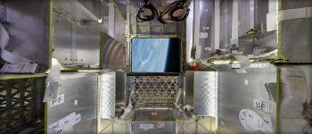

Dragon Vehicle Overview
Dragon is a free-flying spacecraft designed to deliver both cargo and people to orbiting destinations. Dragon made history in 2012 when it became the first commerical spacecraft in history to deliver cargo to the International Space Station and safely return to Earth, a feat previously achieved only by governments. It is the only spacecraft currently flying that is capable of returning significant amounts of cargo to Earth. Currently Dragon carries cargo to space, but it was designed from the beginning to carry humans. Under an agreement with NASA, SpaceX is now developing the refinements that will enable Dragon to fly crew. Dragon's first manned test flight is expected to take place as early as 2018.
Company Background
SapceX designs, manufactures, and launches advanced rockets and spacecraft. The company was founded in 2002 to revolutionize space technology, with the ultimate goal of enabling people to live on other planets.
Configurations
The Dragon spacecraft has three configurations to meet a variety of needs: cargo, crew and DragonLab. To ensure a rapid transition from cargo to crew capability, the cargo and crew configurations of Dragon are almost identical. This commonality simplifies the human rating process, allowing systems critical to crew and space station safety to be fully tested on unmanned cargo flights. With DragonLab, essentially the same spacecraft can be used as a platform for in-space technology demonstrations and experiments.

Cargo
Resupply the Space Station
- DELIVERY AND RETURN SERVICES
- Dragon is the first commercial spacecraft to deliver cargo to the International Space Station and currently the only cargo spacecraft flying capable of returining significant amounts of cargo to Earth. Dragon accomdates pressurized cagro in the capsule as well as unpressurized cargo in its trunk
- VERSITLE CARGO RACKS
- The racks are a honeycomb carbon-aluminum construction designed for efficient packing in a zero-gravity environment. They accomdate a variety of standard-size NASA cargo bags as well as freezer for carrying materials such as biological sampels
Crew
Taking Humans into Space
- PARTNERSHIP WITH NASA
- Dragon was designed from the outset to fly humans to space. Under an agreement with NASA, SpaceX is making upgrades to Dragon to allow for crew carrying abilityes
- CREW UPGRADES
- Dragon will be the world's safest and most reliable transport vehicle, with seating for seven, life support systems, controls with manual capability, and a powered launch system
- FIRST LAUNCH
- Upgrades to Dragon are currently in progess. Dragon's first manned test flight is expected to take place as early as 2018
Dragon Lab
A freeflying microgravity laboratory
- FACILITATING RESEARCH
- DragonLab is a free-flying, unmanned platform designed for research and testing in a microgravity environment independent of the International Space Station.
- LONGEVITY
- It can transport payloads, experiments, instruments, and sensors into space and back to Earth on missions ranging from one week to two years.
- CAPABILITIES
- DragonLab can readily accommodate instrument and sensor testing, space physics and relativity experiments, radiation effects research, and many other microgravity tests.